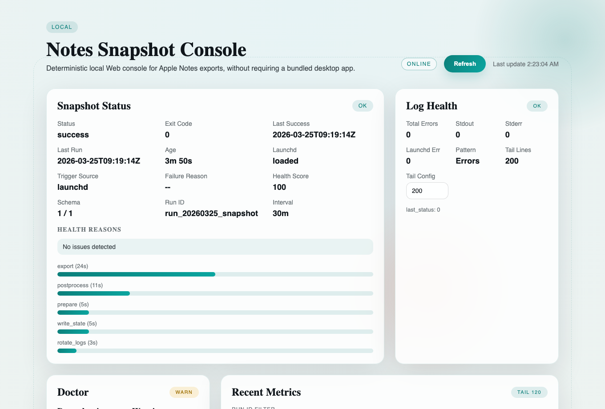
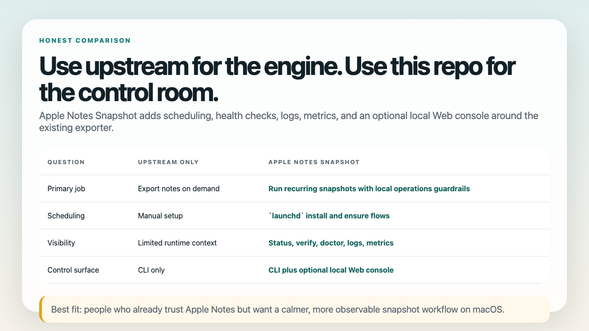
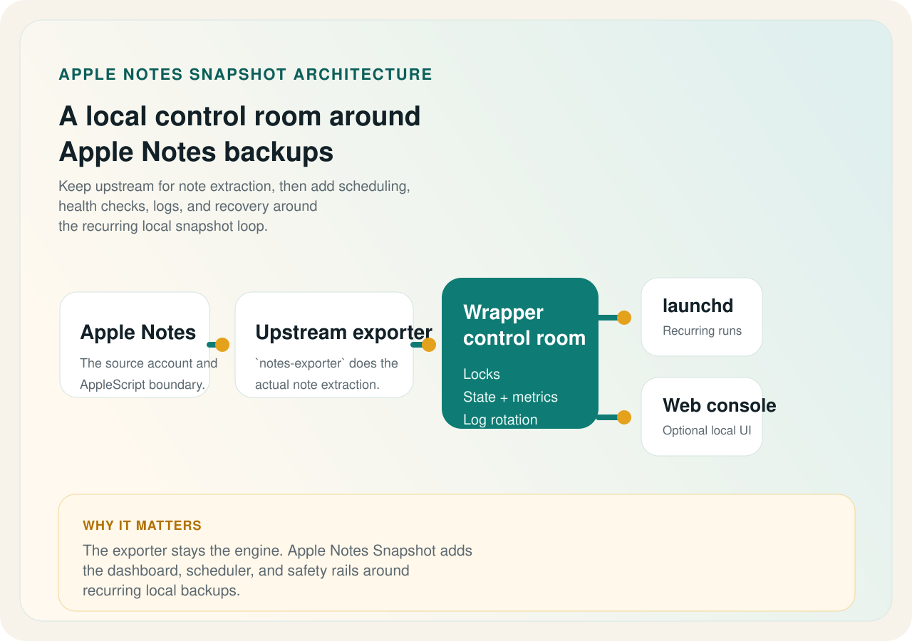

The first question is still simple: where will snapshots land, can one export succeed, and is the scheduler healthy afterward?
Keep upstream. Add a visible control room first.
Operator first
Start with one clean local loop.
Proof before hype
Check evidence before you infer platform scope.
Builder second lane
Add AI, Web, and MCP only after the control room clicks.
The local-first Apple Notes backup control room for macOS.
Apple Notes Snapshot keeps the upstream exporter, then adds path-aware exports, `launchd` scheduling, visible health checks, and a clearer recovery path when the backup loop drifts. Start with the public 3-step quickstart if you want the operator path, and open the compare page if you are still deciding whether the wrapper fits.
AI Diagnose, the Local Web API, and the read-only MCP surface are real builder-facing extensions around the same local control room. They stay in the second lane, not above the operator story.
The proof page is the shortest route to repo gates, GitHub delivery facts, and the same-machine boundary for Web and MCP.
The builder path is real, but it makes more sense after the operator story already feels obvious.
Path-aware
Review or override the export destination before the first run.
Scheduled
Use `launchd` to turn manual exports into repeatable local snapshots.
Visible
Check freshness, failures, logs, metrics, and scheduler state when something breaks.
Extendable
Add AI Diagnose, the Local Web API, and the read-only MCP surface only after the control room already makes sense.

Why people keep it starred
It makes the boring operational part of Apple Notes exports calmer.
Plenty of projects can export notes once. Far fewer make the destination, schedule, health surface, and failure modes easy to inspect after the first run.
Stop treating exports like a one-time manual chore.
Use `launchd` to keep Apple Notes snapshots running at a repeatable cadence without turning the project into a hosted service.
See whether your backup loop is actually healthy.
`status`, `verify`, `doctor`, log rotation, and metrics make the workflow observable instead of mysterious.
Keep upstream, add a visible local wrapper.
Locks, state files, vendor provenance, and an optional token-aware Web console give the exporter a reviewable operational shell.
Use this if you want repeatable local snapshots.
This project is for people who already live in Apple Notes and want a calmer, more visible backup workflow on macOS.
- Personal note archives
- Local automation lovers
- People who want logs and freshness checks
It is not a cloud notes platform or a two-way sync engine.
Apple Notes Snapshot does not try to become a hosted SaaS, a cross-platform sync layer, or a team collaboration product.
- No hosted backend
- No multi-user SaaS promises
- No write-back sync to Apple Notes
See the shape
The workflow stays simple, even when the operations surface grows up.


Go deeper
Open the next shelf only after Quickstart, Compare, and Proof make sense.
Troubleshooting
Use the shortest diagnostic path when permissions, launchd, stale runs, or Web details block the first healthy loop.
Release history
Read the tagged public story version by version when you want release truth instead of workshop notes.
For Agents
Open the builder shelf only after the control-room contract is clear and you want the truthful Web, AI, or MCP split.
Support and community
Use the routing pages when you need the right lane for Q&A, ideas, workflow sharing, or announcements.
Founder-style short note
Why this project feels different from "just another shell wrapper"
The real problem is not exporting notes once. The real problem is trusting a local workflow six weeks later, after checkout paths changed, logs piled up, or the last successful run is no longer obvious. Apple Notes Snapshot exists to make that second problem boring.
Browse the longer notes in the founder note and the 30-second overview. If you are turning the current repo state into a release note, announcement, or demo post, use the external launch prep packet.